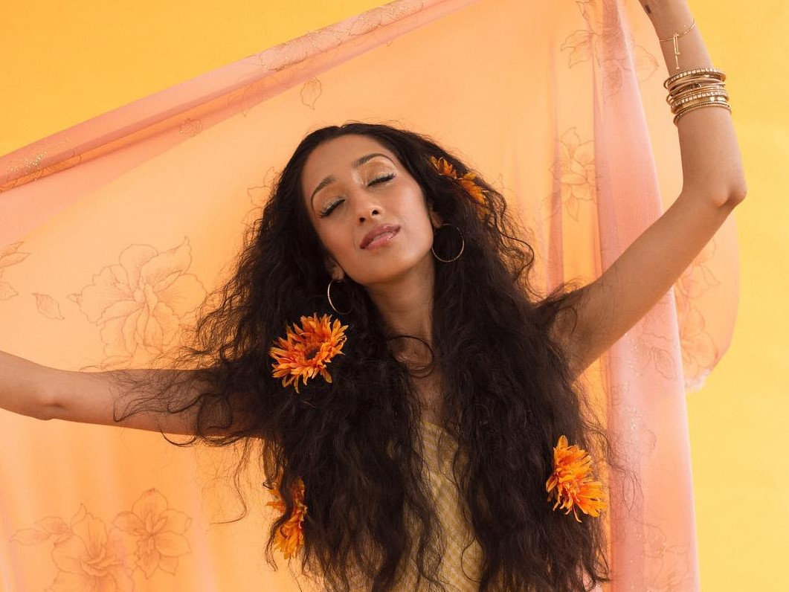
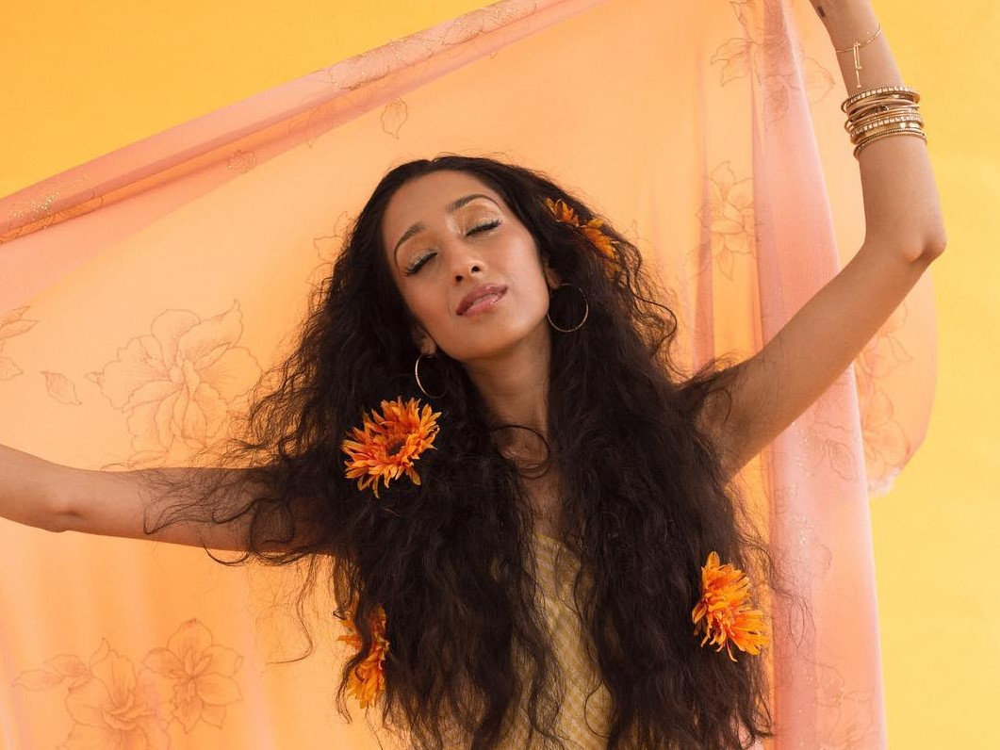

Once a contestant on the popular American Idol, Diamond White has grown up to be a leading artist in genre intersectionality. As a black woman, she defies the implicit bias of the music industry to place black artists into an "urban" category. Making pop and EDM which effortlessly blends into her R&B foundations.

As one of the only females signed onto Gucci Mane's new record label, 1017, Enchanting shows the world how she can easily hang with the 'big dogs'. Often using her male counterpart's lyrics and phrases, and flipping them. Enchanting represents for all women, further emphasizing the multifacetedness of women in musi.
 
